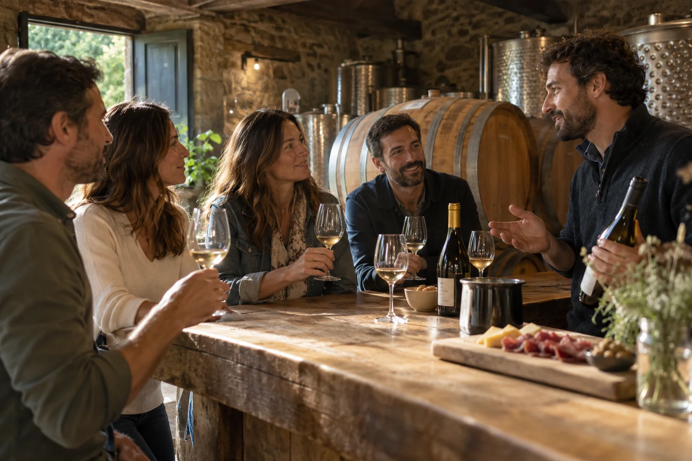

Wineries and tastings in O Ribeiro
Discover the landscape through its wines, too. Several nearby wineries offer visits and tastings: a chance to learn how the wines are made and taste them where they originate. Choose the experience that appeals to you and book ahead.
View on the map ↗